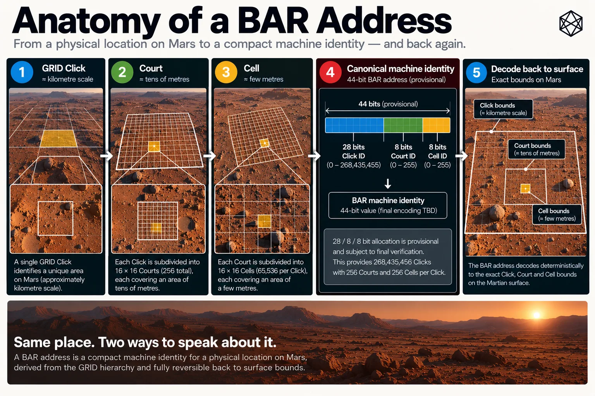

A Place in 44 Bits
The Canonical Bar Identity
At the end of the last chapter we had geometry.
Every GRID Click contains 256 Courts. Every Court contains 256 Cells. The result is nearly 12.7 trillion few-metre patches covering the surface of Mars, all derived from rules rather than stored in a planetary catalogue.
That is enough to answer the physical question. It is not yet a very convenient address.
We could identify a Cell by writing out its complete GRID path and then appending the Court row, Court column, Cell row and Cell column. The result would be exact, understandable and rather longer than most software needs every time it wants to say this place.
Bar therefore needs another representation underneath the human interfaces we will meet later: a compact canonical identity.
The hierarchy is not the machine code
The GRID address path is valuable partly because it exposes structure.
A full Click reference tells us which Quad contains which Zand, Province, Sector, Tile and Click. A human can move up the hierarchy simply by stopping earlier in the path, while software can recover the same containment relationships explicitly.
That is excellent for geography. It is unnecessarily verbose for many machine transactions.
Imagine a maintenance database containing several million assets. Each record may need a fine location. A logistics system may exchange thousands of destinations. Autonomous systems may compare, store and transmit locations continuously. In those contexts, repeatedly carrying the full civil hierarchy is rather like writing somebody's entire postal address every time a database wants to remember which house they live in.
The underlying structure should remain recoverable, but the representation does not have to repeat it in full.
Bar therefore separates two ideas:
the hierarchical geographic reference, which is useful for explanation and context;
and:
the canonical machine identity, which is useful for storage, exchange and computation.
They refer to exactly the same place.
Start with the Click
A Bar Cell always belongs to one GRID Click.
There are 193,557,552 Clicks in MGRID:1:MARS. That number is large, but binary arithmetic is not easily intimidated.
Twenty-seven bits would be insufficient because:
2²⁷ = 134,217,728
Twenty-eight bits provide:
2²⁸ = 268,435,456
possible values, comfortably enough to assign every GRID Click one deterministic global ordinal.
The word ordinal matters. Bar is not inventing 193 million arbitrary entries in a lookup table; the ordinal is derived from the frozen GRID architecture and its defined ordering. Given a valid Click path, a conforming implementation can calculate the corresponding Click ordinal. Given the ordinal, it can recover the Click.
The ordinal is therefore a compact representation of something GRID already knows. It does not replace the hierarchy.
One byte for the Court
Inside the Click, the problem becomes much smaller.
There are sixteen Court rows and sixteen Court columns:
16 × 16 = 256 Courts
Two hundred and fifty-six possibilities fit exactly into eight bits:
2⁸ = 256
so one byte can contain the complete Court position.
The neat part is that the geometry already divides naturally into two four-bit values. A Court row runs from 0 to 15, as does a Court column. Four bits describe sixteen possibilities, so the byte can be understood as:
4 bits Court row + 4 bits Court column
The numerical Court value can therefore be constructed directly from its two-dimensional position:
Court value = 16 × row + column
Court row 0, column 0 becomes the first value. Court row 15, column 15 becomes the last.
Nothing has been looked up. The geometry has simply been packed.
Another byte for the Cell
The Cell uses the same trick again.
Each Court contains sixteen Cell rows and sixteen Cell columns, giving another 256 possibilities. Cell therefore also needs exactly eight bits:
4 bits Cell row + 4 bits Cell column
and:
Cell value = 16 × row + column
The two Bar subdivisions consume one byte each. The whole Cell identity becomes:
Component | Bits |
|---|---|
Global GRID Click ordinal | 28 |
Court | 8 |
Cell | 8 |
Total | 44 |
Forty-four bits are enough to identify every Bar Cell on Mars.
That is the canonical core.
What forty-four bits buys us
Forty-four bits provide:
17,592,186,044,416
possible binary values.
Bar currently uses:
12,684,987,727,872
of them for the actual Cells created by MGRID:1:MARS.
The unused numerical space is not evidence that the design is wasteful. Binary fields are chosen because they align cleanly with the geometry and remain simple to encode and decode. Trying to squeeze every theoretically unused value out of the representation would save a few bits at the cost of making the structure less transparent.
Forty-four bits is already small: five and a half bytes of information. In many software systems it will be convenient to store the value inside a standard 64-bit integer, although that storage choice does not alter the canonical 44-bit location payload.

Read a description of this illustration
The valid binary structure contains 28 bits of Click ordinal, eight bits of Court index and eight bits of Cell index. This original graphic retains obsolete provisional wording, so the corrected illustration must match ratified BAR:1:MARS.
The important point is not whether a developer stores six bytes, eight bytes or some textual rendering in a database.
Storage format is implementation. Identity is protocol.
The same bits can still be understood spatially
Compactness has not destroyed the geometry.
Take the final sixteen bits. The first eight identify the Court; split them into two four-bit values and we recover Court row and Court column. Do the same to the final byte and we recover Cell row and Cell column.
Those four values can also reconstruct the fine-grid coordinates introduced in the last chapter:
fine row = 16 × Court row + Cell row
fine column = 16 × Court column + Cell column
Both run from 0 to 255.
The lower sixteen bits therefore identify one location inside the Click's 256 × 256 fine grid. The upper twenty-eight bits identify which Click that fine grid belongs to.
This makes the code compact without making it opaque. A conforming implementation can take the bits apart and recover the same spatial structure that created them.
Coordinate to Bar
The forward conversion begins with a position expressed in the reference system used by MGRID:1:MARS.
GRID does the first part. It determines the unique Click containing the coordinate, using the ordinary regular geometry or P1 where required. Exact boundaries follow the ownership rules already established earlier in the book.
Once the Click is known, Bar does not need to know anything else about the planet. It takes the coordinate's position inside that Click and determines the Court row and column, then the Cell row and column inside that Court.
The resulting values are packed into:
Click ordinal + Court byte + Cell byte
and the canonical 44-bit identity is complete.
The flow is therefore:
coordinate → Click → Court → Cell → Bar identity
That sequence is deliberately boring. There should be no database search, no nearest-address query and no request to a remote service asking which identifier has been allocated to the location.
The answer follows from the rules.
Bar back to geography
The reverse operation matters just as much.
Suppose a rover receives a Bar identity rather than a coordinate. The first twenty-eight bits identify the GRID Click, the next eight identify the Court and the final eight identify the Cell.
From the Click ordinal, the implementation reconstructs the corresponding GRID Click and therefore its angular bounds. That parent Click may be regular or polar; the Bar decoder does not have to guess which, because GRID's own inverse logic reconstructs the actual geometry.
The Court byte then selects one sixteenth-by-sixteenth portion of that Click. The Cell byte selects one sixteenth-by-sixteenth portion of the Court.
The result is the unique angular bounds of the addressed Cell:
Bar identity → Click → Court → Cell bounds
A representative coordinate can then be calculated inside those bounds if some downstream system wants one.
This distinction is useful. The Bar identity fundamentally refers to the Cell, not to one privileged point at its centre. A mapping application may display a centre point. A vehicle may navigate towards one. Another system may choose an entrance or safe stopping position inside the Cell.
Those are application decisions. The canonical address is the small area itself.
Why reversibility matters
A system can produce unique identifiers without being reversible.
Take every Cell on Mars, assign it a random number and store the mapping in a database. Provided nobody accidentally reuses a number, the identifiers would be unique.
They would also be dependent on the database forever. Without the allocation table, the number would tell you nothing about where the Cell was.
Bar takes the opposite approach: the location creates the identity.
That means the identity contains enough structured information, together with the public protocol, to reconstruct the location without consulting the organisation that first generated it. This is one of the most important differences between a portable infrastructure standard and a service-controlled location key.
The goal is not merely:
unique
It is:
unique, deterministic and reversible
Those extra words change the institutional architecture of the system.
No registry required
Mars will have registries. There will be excellent reasons to maintain directories of settlements, buildings, infrastructure, scientific sites, land interests and millions of other things future inhabitants decide are worth recording.
Bar does not need to become one of them.
No authority has to issue the next Cell number, and nobody needs to reserve an address before using it. Two organisations can independently calculate the Bar identity of the same location and obtain the same result without first exchanging records.
That property becomes particularly valuable at planetary scale.
Imagine two research teams visiting the same remote instrument years apart. One records its Bar identity. The second arrives with no access to the first team's original software but does have the public protocol. The old identifier remains meaningful because the meaning was never trapped inside the first team's database.
Or imagine a settlement company disappears. Its maps may vanish, its software may stop being maintained and its servers may be turned off.
The surface of Mars should not respond by changing address.
Offline means more than cached
The phrase offline addressing can mean several different things.
At the weakest level, an application downloads a large proprietary database in advance and consults the cached copy when connectivity disappears. That is certainly useful, but the system still depends on obtaining and maintaining the database.
Bar's aim is stronger: a conforming implementation should be able to compute the address from the specification itself.
For the core machine identity, the required knowledge is modest:
the appropriate Matlas and Bar protocol version;
the MGRID:1:MARS rules;
the relevant reference-realisation definition;
the Bar subdivision and encoding rules.
With those in hand, the location can be calculated locally.
The software may still carry tables or precomputed indexes because engineers enjoy making fast things faster. That is an implementation choice. The meaning of the address does not depend on them.
Mars is a useful environment in which to be suspicious of hidden network assumptions. A remote rover, habitat or field team may periodically have rather more important problems than whether the central address service is responding.
Infrastructure should degrade gracefully.
Determinism has an unfashionable requirement
If two implementations receive the same valid coordinate under the same protocol version, they must produce the same Bar identity.
Not approximately the same.
Not usually the same.
The same.
This requirement sounds obvious until numerical boundaries become involved.
A coordinate that lies comfortably in the middle of a Cell is easy. A coordinate exactly on a Court boundary is more interesting. A coordinate exactly on a Cell boundary is more interesting again. Add the 72° GRID transition or the geographic poles and a careless implementation can discover several different meanings of obvious.
Bar therefore inherits GRID's deterministic boundary semantics rather than inventing new ones. The mathematical interval owns the point according to the published rule, and implementations must reproduce that result rather than rely blindly on whatever rounding behaviour happens to emerge from a programming language's floating-point arithmetic.
That is why conformance examples matter. Most users will never knowingly encounter an exact boundary; standards have to behave correctly there anyway.
Version is part of meaning
A persistent address needs one further piece of context: which rules created it.
MGRID:1:MARS already carries a major geometry version because changing the geometry changes the meaning of an identifier. Bar requires the same discipline.
A software update that makes conversion faster does not create a new geography. Neither does a corrected user interface or a new Triplet vocabulary.
But if a future Bar version altered the subdivision, changed canonical boundary ownership or reassigned the machine identity of physical Cells, old addresses could no longer be interpreted safely under the new rules.
That kind of change requires an explicit protocol version.
The forty-four bits therefore identify the Cell within the relevant Mars Bar profile. External serialization and protocol framing must preserve enough version and body context to know how those bits are to be interpreted.
The detailed wire format belongs in the specification rather than here. The principle belongs in the book:
Old addresses should never silently acquire new geography.
Persistent identity requires persistent rules.
Compact does not mean human-friendly
At this point we have something machines should like.
A Bar identity is compact, deterministic, locally computable and locally decodable. It nests exactly into GRID and works in both the regular and polar regimes because the Click geometry comes from the same underlying system.
It is also not something I particularly want shouted at me during an emergency.
Forty-four bits can be written in binary, hexadecimal, decimal or some other machine-oriented notation. None of those representations suddenly turns into pleasant human conversation merely because the number is technically shorter than a coordinate pair.
This is not a flaw. The machine identity was never asked to be charming.
A mistake in many technical systems is to discover that the canonical code is inconvenient for people and then start weakening the canonical code until it becomes easier to read. That usually produces something which is neither especially elegant for machines nor especially memorable for humans.
Matlas takes the opposite approach.
Let the machine layer be a machine layer. Then build a human interface deliberately.
Two implementations should agree
There is a useful practical test for whether Bar has actually become a protocol.
Write one implementation, then write another independently. Give both the same large set of inputs: ordinary coordinates, regular boundaries, Court boundaries, Cell boundaries, the ±72° transition, polar Clicks and the two exact poles.
Ask each implementation for the canonical Bar identity, then reverse the process and ask each to reconstruct the corresponding Cell.
If the answers differ, the specification is not yet finished.
This is a stronger standard than showing that one reference implementation works correctly against itself. A program can be internally consistent while embodying assumptions the written protocol never stated.
Independent reproduction forces ambiguity into the open.
When the system is complete, the public technical release should contain the normative rules, reference implementation, conformance vectors and enough test material for another competent developer to reproduce the result without access to any private code or database.
That work belongs in the technical repository.
The book needs only the conclusion:
same place, same version, same Bar identity
The address underneath the address
We can now see the shape of the full system more clearly.
GRID provides persistent geographic context. Bar subdivides the final Click into a few-metre Cell. The canonical Bar identity records that Cell compactly in forty-four bits.
None of this requires a street name, a building database or a live connection to an address provider. That makes the machine layer unusually durable.
It also creates the next problem.
A forty-four-bit identity may be perfect for a maintenance database and miserable for a human voice. People mishear digits, transpose characters and forget strings that machines find trivial. They speak with different accents and over imperfect radios. They also have an irritating habit of wanting an address they can actually remember long enough to use.
So we now have the opposite challenge from the one that began Part IV.
The location is exact. The identity is compact. The machinery works.
Now we have to make it speak.
That is the job of Triplet.